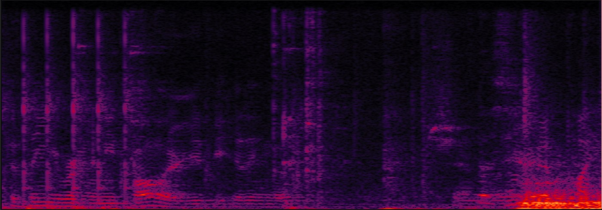
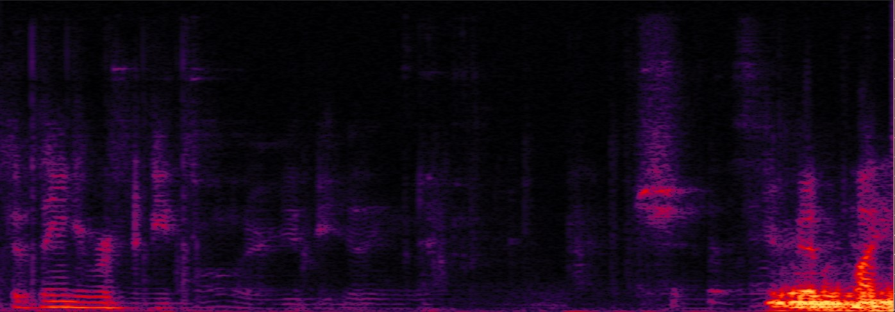
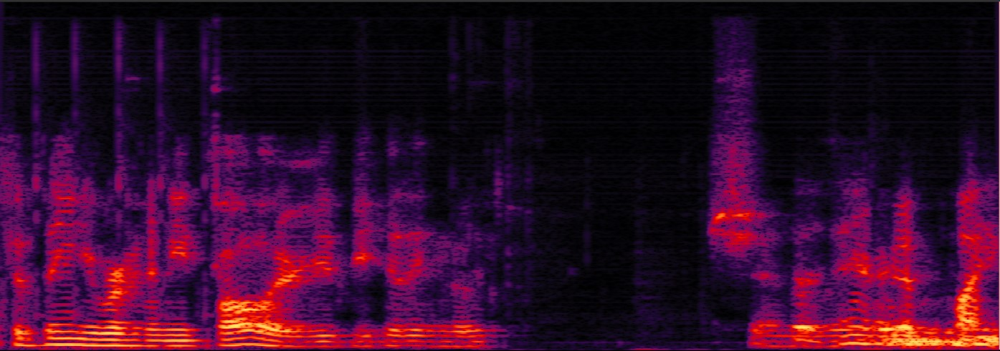
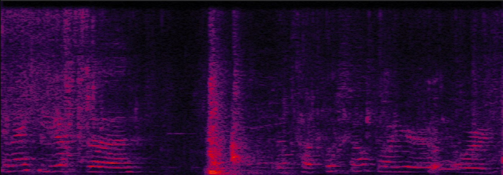
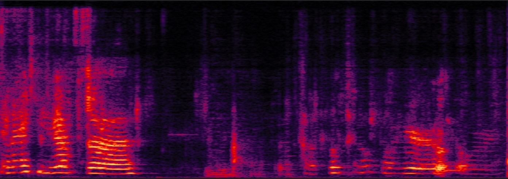
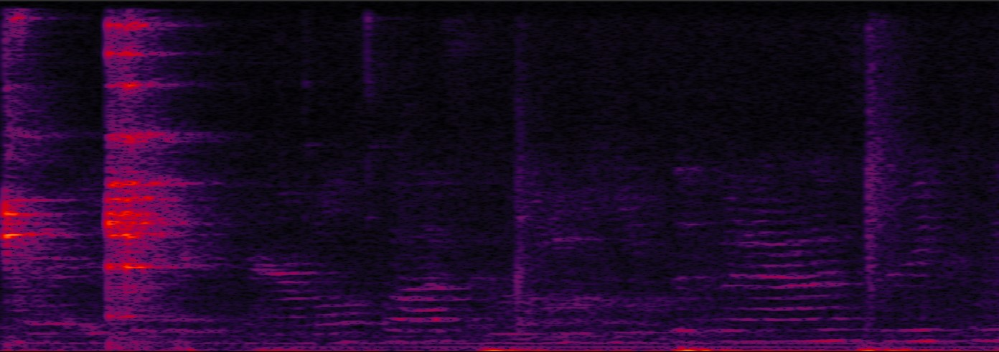
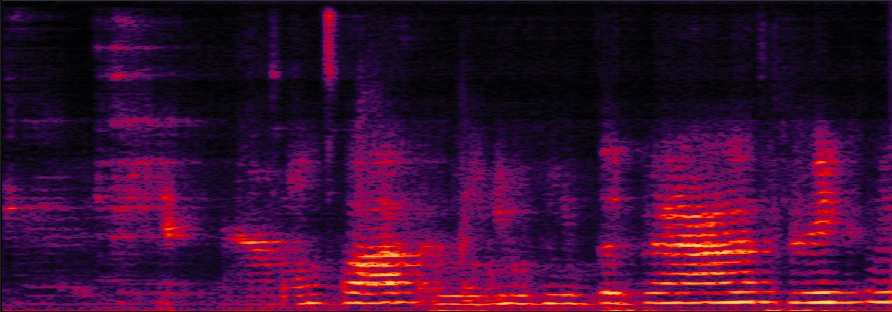
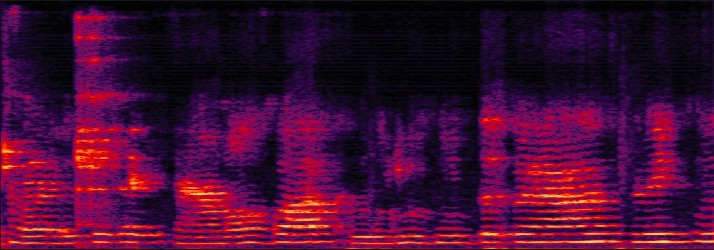

Leveraging Out-of-Domain Noise for Unsupervised Domain Adaptation in Speech Enhancement,
submitted to ICASSP2025, Yu Liao, Haixin Guan, Shuang Wei, Yanhua Long, Shanghai Engineering Research Center of Intelligent Education and Bigdata, Shanghai Normal University, Shanghai, China, Unisound AI Technology Co., Ltd., Beijing, China
When there’s a mismatch between the training and test domains, supervised speech enhancement (SE) models trained on synthetic paired noisy-clean data often struggle in real-world scenarios, highlighting the industry’s strong demand for unsupervised training and domain adaptation methods. We introduce PHA-ReMixIT, a novel approach for leveraging out-of-domain (OOD) noise signals to enhance unsupervised domain adaptation in SE.
This is a demo page of PHA-ReMixIT. We present several audio demos selected from the CHiME-5/eval/1 subset, along with a comparison of samples enhanced using ReMixIT and PHA-ReMixIT to demonstrate the results.
| No. | Input | ReMixIT | PHA-ReMixIT |
|---|---|---|---|
| S21_P46_202 |

|

|

|
| S01_P02_59 |

|

|
|
| S21_P45_111 |

|

|

|